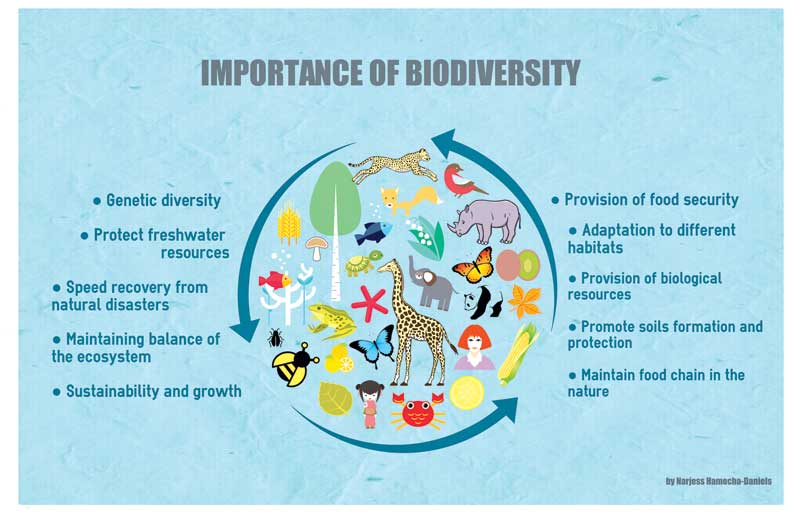

What is Biodiversity
Biological diversity deals with the degree of nature's variety in the biosphere. This variety can be observed at three levels; the genetic variabil- ity within a species, the variety of species within a community, and the organisation of species in an area into distinctive plant and animal com- munities constitutes ecosystem diversity.
Definition:
'Biological diversity' or biodiversity is that part of nature which includes the differences in genes among the individuals of a species, the variety and richness of all the plant and animal species at different scales in space, locally, in a region, in the country and the world, and various types of ecosystems, both terrestrial and aquatic, within a defined area.
Importance of Biodiversity
Biodiversity is essential for the processes that support all life on Earth, including humans. Without a wide range of animals, plants and microorganisms, we cannot have the healthy ecosystems that we rely on to provide us with the air we breathe and the food we eat. And people also value nature of itself.
Some aspects of biodiversity are instinctively widely valued by people but the more we study biodiversity the more we see that all of it is important - even bugs and bacteria that we can't see or may not like the look of. There are lots of ways that humans depend upon biodiversity and it is vital for us to conserve it. Pollinators such as birds, bees and other insects are estimated to be responsible for a third of the world's crop production. Without pollinators we would not have apples, cherries, blueberries, almonds and many other foods we eat. Agriculture is also reliant upon invertebrates - they help to maintain the health of the soil crops grow in. Soil is teeming with microbes that are vital for liberating nutrients that plants need to grow, which are then also passed to us when we eat them. Life from the oceans provides the main source of animal protein for many people.
